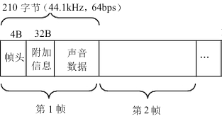

音频采样数据
音频采样数据的作用
保存了音频中每个采样点的值。
特点
音频采样数据提交很大，一般情况下一首 4 分钟的 PCM 格式的歌曲体积为：
4 * 60 * 44100 * 2 * 2 = 42.3MByte
ps:这里假定采样率为 44100Hz，采样精度为 16 bit 。
解释：
44100Hz - 即每秒钟采集 44100 个点
2 - 假定为双声道
2 - 16 bit 等于 2 个字节
MP3 格式：
音频的格式分为有损压缩（MP3、AAC、OGG、WMA）和无损压缩（ALAC、APE、FLAC）两种格式。
目前最常用的音频格式是 MP3，MP3 是一种有损压缩音频格式。
MP3 编码方式常用的有两种：固定码率（Constant bitrate, CBR）和可变码率（Variable bitrate, VBR）.
MP3格式中的数据通常由两部分组成，一部分为ID3用来存储歌名、演唱者、专辑、音轨数等信息，另一部分为音频数据。音频数据部分以帧(frame)为单位存储，每个音频都有自己的帧头，如图所示就是一个MP3文件帧结构图。MP3中的每一个帧都有自己的帧头，其中存储了采样率等解码必须的信息，所以每一个帧都可以独立于文件存在和播放，这个特性加上高压缩比使得MP3文件成为了音频流播放的主流格式。帧头之后存储着音频数据，这些音频数据是若干个PCM数据帧经过压缩算法压缩得到的，对CBR的MP3数据来说每个帧中包含的PCM数据帧是固定的，而VBR是可变的。

PCM 格式：
- 单声道的情况下按照顺序存储每个采样点的数据。
- 双声道的情况下按照 “左右、左右” 的顺序存储每个采样点两个声道的数据。

音频采样数据查看工具
Adobe Audtion
有个疑问？
PCM 数据是否也不包含文件头，在播放 PCM 音频时是否也要自己设置采样率、声道数和采样精度？似乎是这样的，待查证！
实验
用 Audtion 打开 PCM 音频，确实是要设置采样率、声道数、采样精度这几个参数的。
- 测试一
采样精度设置错了，比如原来的是16bit，播放的时候设置成32bit了，也是可以播放的，但声音听起来会加快并且很刺耳，在界面上可以看到整个波形都变成了方波了。
音频原本的位深 bit 为 AV_SAMPLE_FMT_FLTP 的，在播放的时候如果设置它的位深为 AV_SAMPLE_FMT_S16 就会导致听起来播放速度变快了。
- 测试二
原本采样率为 44100 Hz的，如果设置为 22050Hz，播放声音会被拉长变慢，听起来像老牛声一样；如果设置为 96000Hz 的话声音播放速度会加快一倍。
原因也挺好理解的：本来录制的时候是1秒钟采样44100个点的，正常来说播放也应该是1秒钟读取44100个点，然而现在你设置成1秒钟读取22050个点了，自然读取速度就变慢了，声音听起来就慢了一倍；当设置成96000Hz，一秒钟读取的数据多了一倍，自然播放速度就变快了，声音也变快了。
其他的等待实验~